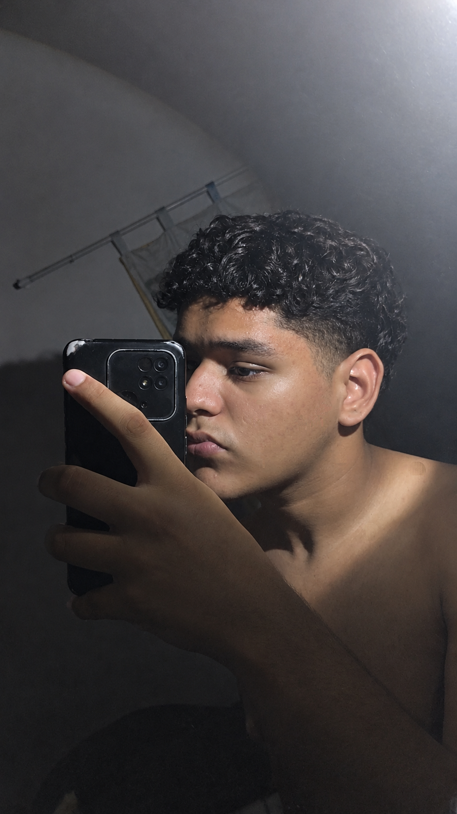

Desenvolvimento web01
PlatinumGames
Site sobre jogos, com páginas de informações e guias de conquistas. Projeto desenvolvido com HTML, CSS e JavaScript, incluindo pesquisa e layout responsivo.
Ver repositório ↗
Estudante de informática · Desenvolvedor em formação
Sou estudante do curso Técnico em Informática na Escola Estadual de Ensino Profissional Deputado Roberto Mesquita e moro em General Sampaio, Ceará. Gosto de tecnologia, games e de aprender como ideias podem virar projetos digitais.
Atualmente estou desenvolvendo meus conhecimentos em HTML, CSS e JavaScript, enquanto estudo e aprendo sobre APIs e bancos de dados. Tenho interesse em desenvolvimento web e quero ampliar minhas habilidades criando experiências, ferramentas e soluções próprias. Cada projeto é uma oportunidade de praticar e dar mais um passo na minha formação.
Site sobre jogos, com páginas de informações e guias de conquistas. Projeto desenvolvido com HTML, CSS e JavaScript, incluindo pesquisa e layout responsivo.
Ver repositório ↗Projeto independente de inteligência de mercado para jogos, planejado para reunir catálogo, comparação e histórico de preços, com análises explicáveis.
Ver repositório ↗Repositório de um projeto de quiz relacionado ao basquete, criado para praticar lógica e desenvolvimento com JavaScript.
Ver repositório ↗Repositório com atividades e exercícios realizados durante os estudos do curso Técnico em Informática.
Ver repositório ↗Gosto do universo Pokémon, seus personagens e jogos.
Curto videogames e tenho interesse em como são desenvolvidos.
Gosto de aprender programação e explorar novas ferramentas.
Pretendo concluir o Ensino Médio e o Técnico em Informática, cursar Engenharia de Software e continuar minha trajetória na área de Tecnologia da Informação. Quero começar construindo projetos, aprender com cada experiência e crescer como desenvolvedor.